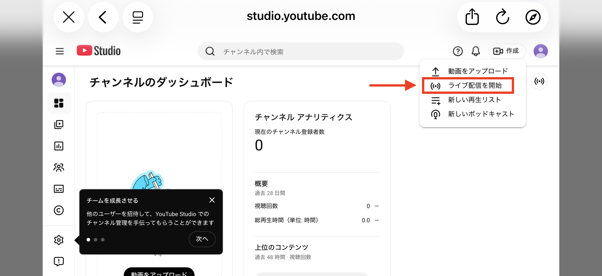
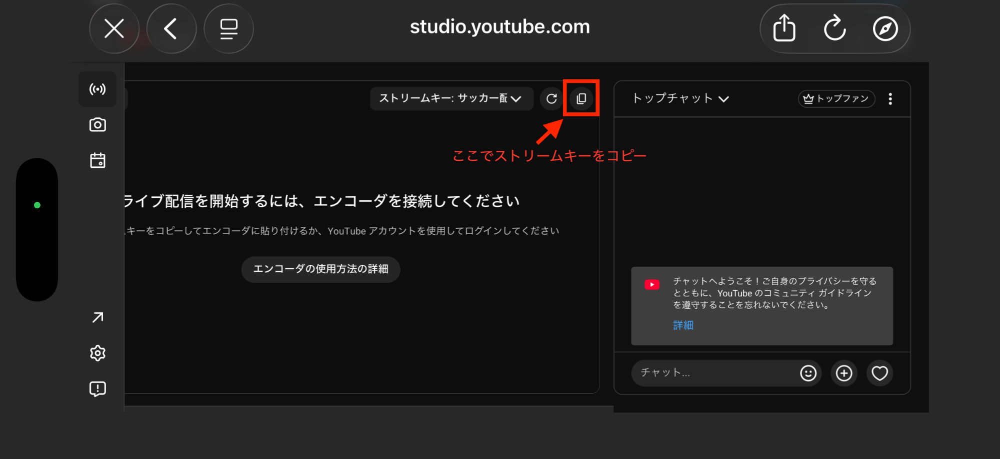
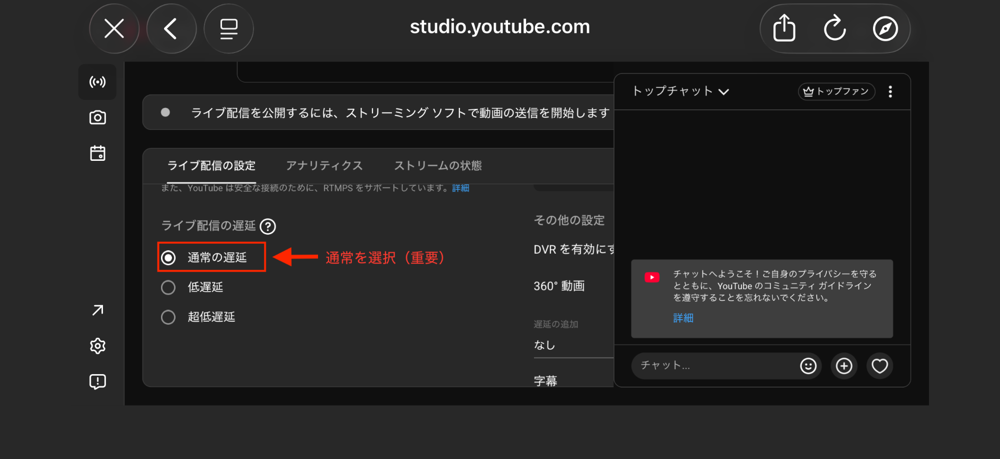
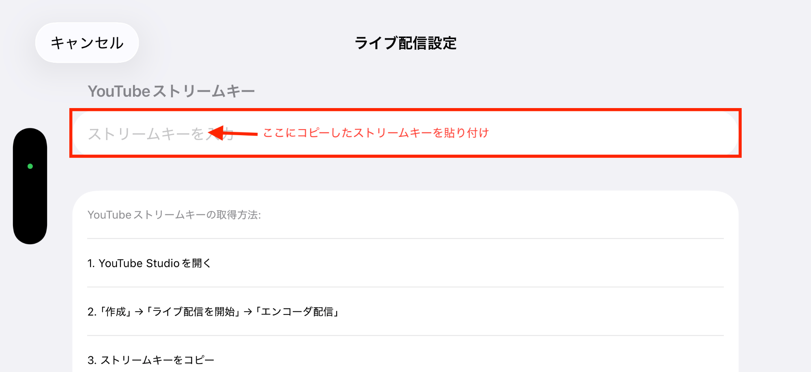

ブラウザで studio.youtube.com を開きます。
ダッシュボードが表示されたら、右上の「作成」ボタンをタップします。
メニューが開いたら「ライブ配信を開始」をタップします。

初めての場合、「ライブ配信へのアクセスのリクエスト」画面が表示されます。
「リクエスト」ボタンをタップしてください。
リクエスト後、YouTube側で最大24時間の有効化処理が行われます。
有効化が完了すると、ライブ配信を開始できるようになります。
コピーボタンをタップして、ストリームキーをコピーします。
「ライブ配信の設定」タブで、レイテンシを「通常の遅延」に設定してください。
ToruLiveアプリを開き、ライブ配信設定画面でコピーしたストリームキーを貼り付けます。

「実際の配信開始」ボタンをタップすると、YouTubeライブ配信が始まります。
次回からはこの設定は不要です。